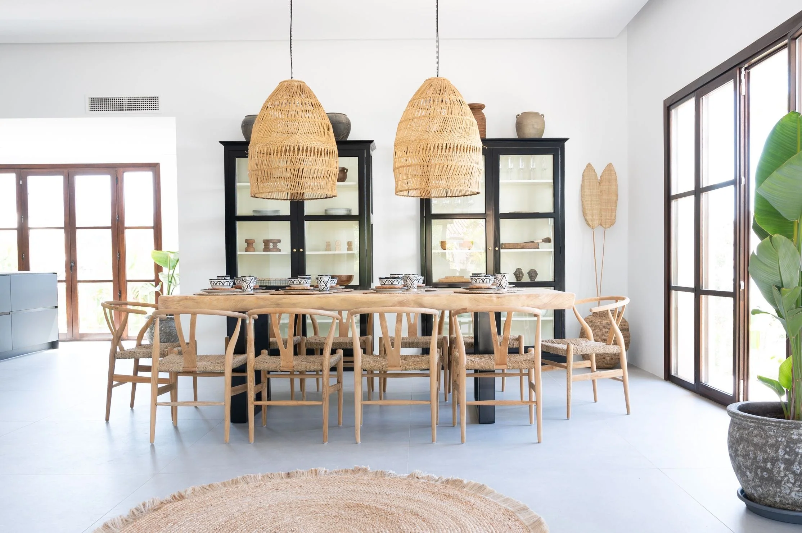
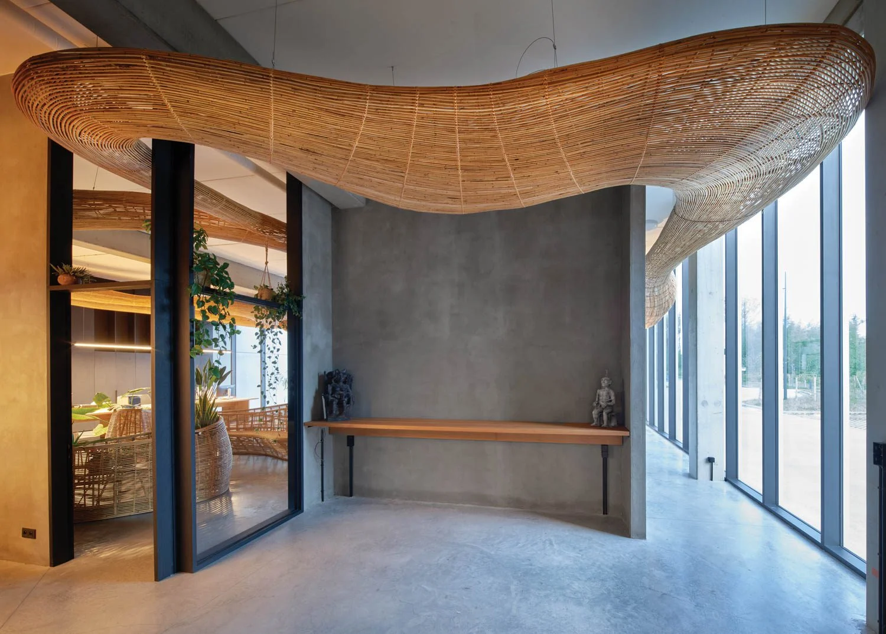
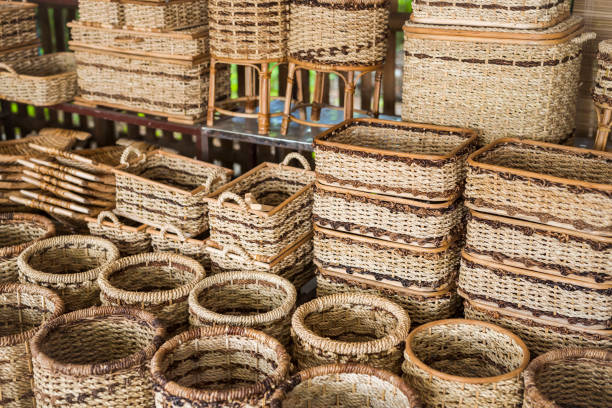
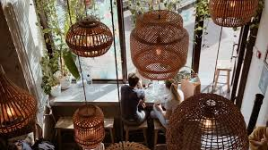
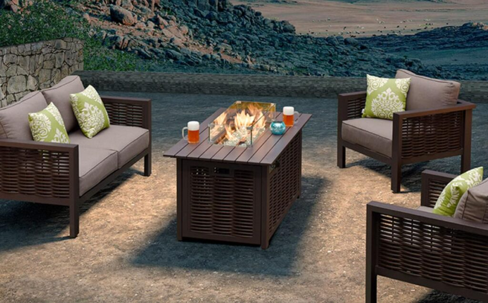
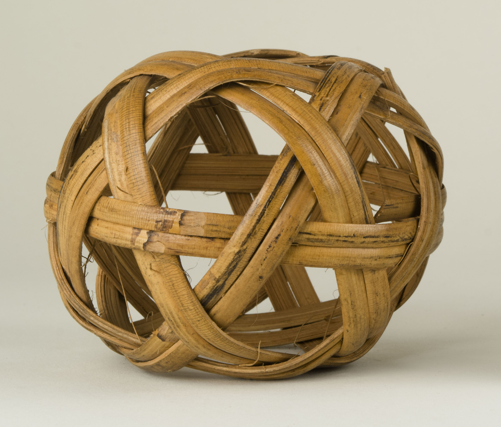

7 Uses And Application of Rattan
Furniture and Furnishings
Rattan is best known for its extensive use in furniture production, including chairs, sofas, tables, beds, shelves, cabinets, and lounge seating. Its combination of strength and flexibility allows furniture to be both sturdy and comfortable. Rattan furniture is widely used in homes, hotels, resorts, cafés, and outdoor lounges, especially in tropical settings such as those found in the Philippines. Its breathable structure makes it ideal for warm climates, providing comfort without trapping heat.
Interior Design and Architectural Elements
In architecture and interior design, rattan is used for wall cladding, ceiling panels, room dividers, stair railings, and decorative screens. These applications add texture, warmth, and a natural aesthetic to interior spaces. Rattan architectural features are commonly seen in eco-resorts, restaurants, cultural centers, and modern tropical homes, where natural materials are emphasized to create a relaxed and organic atmosphere.
Handicrafts and Woven Products
Rattan plays a major role in Filipino handicrafts, where it is used to create baskets, trays, mats, storage containers, lampshades, and decorative items. These products highlight traditional weaving techniques and support local craftsmanship. Handcrafted rattan items are popular in local markets, souvenir shops, and export products, serving both functional and decorative purposes.
Lighting Fixtures
Rattan is widely used in lampshades, pendant lights, lanterns, and floor lamps. When woven, it allows light to pass through in patterned shadows, creating a warm and inviting ambiance. These lighting applications are commonly used in residential interiors, cafés, spas, and hospitality spaces, where mood lighting and natural textures are desired.
Outdoor and Semi-Outdoor Applications
Due to its lightweight and flexibility, treated rattan is often used in porches, balconies, gazebos, patios, and garden furniture. When properly protected from prolonged moisture exposure, rattan performs well in shaded outdoor environments. Outdoor rattan furniture is especially popular in resort and leisure settings, where comfort, aesthetics, and ease of movement are important.
Cultural and Traditional Uses
Traditionally, rattan has been used for household tools, fish traps, binding materials, and agricultural implements. These applications demonstrate rattan’s practicality and adaptability in everyday Filipino life. Its continued use in traditional contexts highlights rattan’s role as a culturally significant and functional local material.